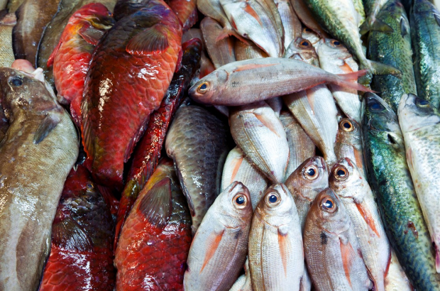
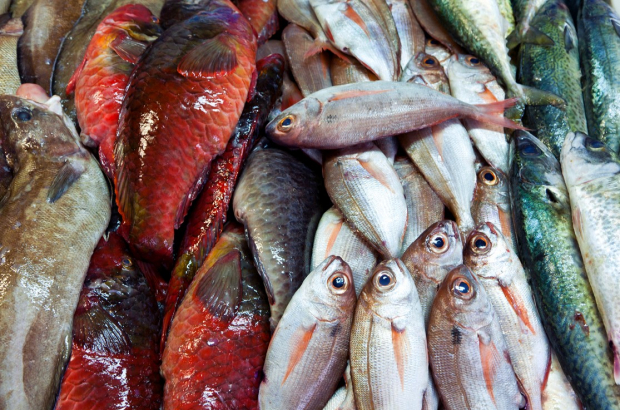
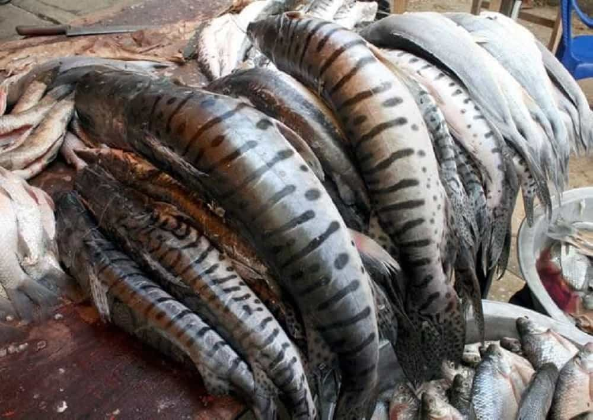

Somos la unica empresa pesquera en la región sucreña que tiene la mayor despensa de pescados y mariscos frescos traidos diariamente de golfo de morrosquillo , sub región de la mojana, sub región san jorge, entre muchos más lugares de nuestras región sucreña. Apoyamos principalmente la pesca sucreña, Artesanal y responsable, compramos directamente, no tenemos intermediarios.
En peces de la sabana les recordamos lo rica que es la comida de nuestras costas, para que no la olviden, siempre defendiendo nuestros sabores tradicionales, un pescado bien frito, arroz con coco, patacones, cazuela y también tienen la opción de disfrutar preparaciones con Leña, al horno o en estufa.
algunos peces prodrian ser:
- Corvina
- bocachico
- barbul
- Trucha
- lamprea
- carpa
- esturión
Desarrillado por el aprendiz: SAMUEL RAMOS.